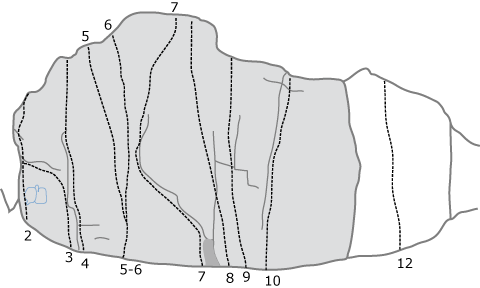

Margreteberg
Lat: 59.33506
Long: 18.27507
Allmänt
Liten överhängande klippa med endel fina leder. Ligger i mörk barrskog - glöm inte myggmedel!
Vägbeskrivning
Margreteberg
Efter klättringen rekommenderas ett besök på
Leder

- 1
- Känn dig hemma
- 6c
- Leden längst till vänster
- 2
- Hemlös
- 7b
- Arêten, direktinsteg
- 3
- Coolman
- 7c
- Arêten med insteg från höger
- 4
- Det mörka hotet
- 7c+
- Kroppstung och teknisk
- 7
- Dyra vanor
- 7c+
- Svänger av åt höger
-
- Breitling
- 8a+
- Insteg i {{ledlänk|namn=Dyra vanor}} sedan vänster till {{ledlänk|namn=Rolex}}
- 8
- Långa farbrorn
- 7c
- Reach
- 9
- Stövla på
- 6c
- En led man kan vara utan
-
- Närmare 50 än 40
- 7c+
- Kylskåpsklättring på arêten. Kort och bouldrig. Hörnet används ej.
- 11
- Lätt som en plätt
- 5a
- Diedret
- 12
- Svaleden
- 7b+
- Tunn svaklättring.
[[bild:Margreteberg.jpg|thumb|right|250px|Hemlös Foto:
Jonas Ahlman
]]
Kategori:Nacka-Värmdö
Kategori:Stockholm
Kategori:Sport
Kategori:Överhäng
Kategori:Sva
Copyright (C) Permission is granted to copy, distribute and/or modify this document under the terms of the GNU Free Documentation License, Version 1.3